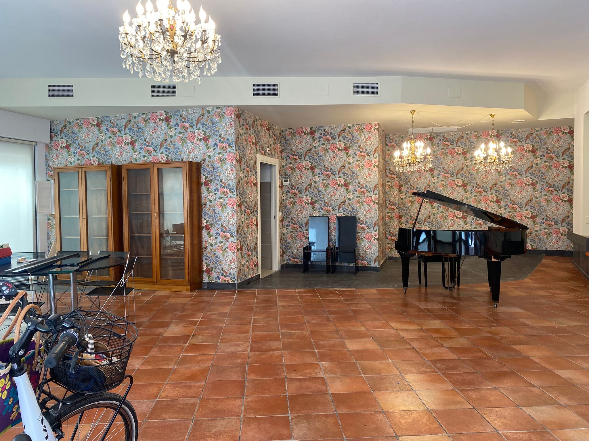
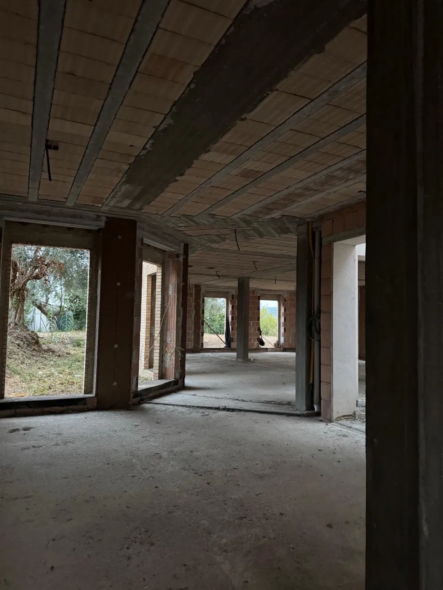
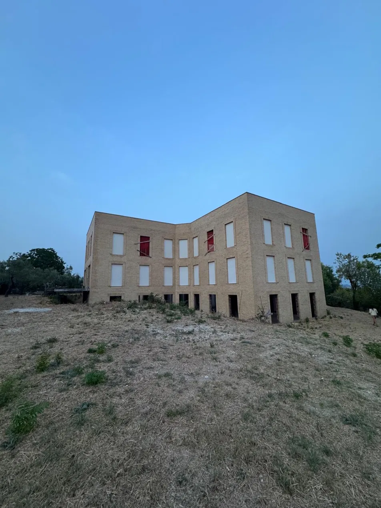

Cosa stiamo facendo
I nostri progetti

Sede centrale
Presso la nostra sede di Via delle Caserme DA VERIFICARE: civico organizziamo DA VERIFICARE: quali attività.
- Cosa facciamo
- DA VERIFICARE
- Per chi
- DA VERIFICARE
- Quando
- DA VERIFICARE: giorni e frequenza
- Chi conduce le attività
- DA VERIFICARE
- Come partecipare
- DA VERIFICARE: gratuito o a offerta, iscrizione, contatto
Villa Pace
Il nostro progetto più ambizioso: una struttura sanitaria aperta alla ricerca, un luogo di comunità, cura e innovazione dedicato alla terza età.
- Dove
- DA VERIFICARE: comune e località
- A che punto siamo
- DA VERIFICARE: stato dei lavori
- Posti previsti
- DA VERIFICARE
- Servizi previsti
- DA VERIFICARE
- Tempi
- DA VERIFICARE
- Cosa serve per completarla
- DA VERIFICARE: fabbisogno economico

